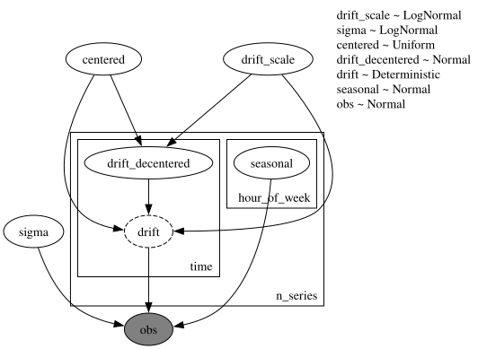
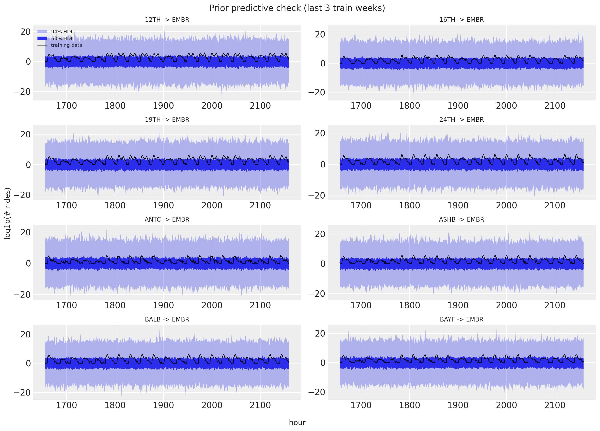
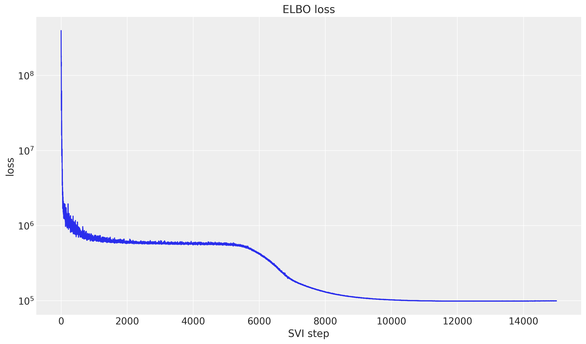
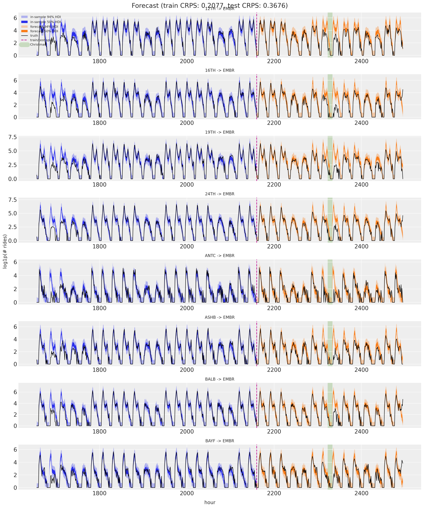

from typing import cast
import arviz as az
import jax.numpy as jnp
import matplotlib.pyplot as plt
import numpy as np
import numpyro
import numpyro.distributions as dist
import pandas as pd
import xarray as xr
from jax import random
from numpyro.infer import Predictive
from numpyro.infer.reparam import LocScaleReparam
from numpyro.optim import Adam
from numpyro_forecast import Forecaster, ForecastingModel, eval_crps
from numpyro_forecast.datasets import load_bart_hierarchical
from numpyro_forecast.typing import Array
from numpyro_forecast.util import periodic_repeat
az.style.use("arviz-darkgrid")
plt.rcParams["figure.figsize"] = [12, 7]
plt.rcParams["figure.dpi"] = 100
plt.rcParams["figure.facecolor"] = "white"
numpyro.set_host_device_count(n=4)
rng_key = random.PRNGKey(seed=42)
%load_ext autoreload
%autoreload 2
%load_ext jaxtyping
%jaxtyping.typechecker beartype.beartype
%config InlineBackend.figure_format = "retina"Hierarchical forecasting I
Hierarchical forecasting I with numpyro_forecast
This notebook ports the blog post Hierarchical forecasting with NumPyro (part I) to the numpyro_forecast package. This example is by itelf a port of the first part of the original Pyro example: Forecasting III: hierarchical models. It generalizes the univariate notebook from a single series to many: we forecast hourly BART arrivals to one destination (EMBR, Embarcadero) from all 50 origin stations at once. Each origin keeps its own random-walk level and weekly seasonality, but they share global hyperparameters and a single observation scale, which lets information pool across the series.
Note on reproducibility. We match the blog’s data, seed, optimizer and step counts. Results reproduce the blog’s behavior and CRPS magnitude but are not bit-for-bit identical: the forecast horizon uses the package’s separate-
_future-site mechanism rather than re-running the guide over the full covariates.
Prepare notebook
Read data
We load the windowed origin-destination panel (log1p counts, 90 training days plus 2 test weeks) and select arrivals to EMBR from every origin. The log1p transform tames the multiplicative growth while staying defined at zero rides, which matters for hourly counts. The result is a (time, n_series) array where each of the 50 origins is one series, time is at axis -2, and the series dimension is at axis -1.
y_full, split, stations = load_bart_hierarchical()
embr = stations.index("EMBR")
data = jnp.swapaxes(y_full[:, :, embr], 0, 1) # (time, n_series)
n_series = data.shape[-1]
print("data shape:", data.shape, "| split:", split)
fig, ax = plt.subplots()
for i in range(8):
ax.plot(np.asarray(data[:, i]), lw=0.8, label=stations[i])
ax.legend(ncol=4, fontsize=8)
ax.set(title="Arrivals to EMBR (log1p), 8 origins", xlabel="hour", ylabel="log1p(# rides)");data shape: (2496, 50) | split: 2160
Train-test split
We hold out the last two weeks (336 hours) for testing. The model learns seasonality internally from the time index, so the covariates here are just dummy zeros: only their shape (the duration) is read, to tell training from forecasting.
T0 = 0
T1 = split # 2_160
T2 = data.shape[0] # 2_496
y_train = data[T0:T1]
y_test = data[T1:T2]
covariates = jnp.zeros((T2, n_series))
covariates_train = covariates[T0:T1]
time = np.arange(T2)
time_train = time[T0:T1]
time_test = time[T1:T2]
print("train:", y_train.shape, "test:", y_test.shape)
# Christmas anomaly index (BART series starts 2011-01-01, hourly).
dates = pd.date_range("2011-01-01", periods=78_888, freq="h")[-T2:]
christmas = np.flatnonzero((dates.month == 12) & (dates.day == 25))
christmas_index = int(christmas[0]) if len(christmas) else None
print("christmas index:", christmas_index)train: (2160, 50) test: (336, 50)
christmas index: 2328Model specification
This is the univariate model lifted to a panel. Each series \(s\) gets its own random-walk level \(\ell_{t,s}\) and its own weekly seasonal profile (one value per hour-of-week, 168 in total), and all series share the same global drift scale and observation scale \(\sigma\):
\[\begin{align*} \mu_{t,s} & = \ell_{t,s} + \text{seasonal}_{(t \bmod \text{period}),\,s} \\ \ell_{t,s} & = \ell_{t-1,s} + \delta_{t,s} \\ \delta_{t,s} & \sim \text{Normal}(0, \sigma_\text{drift}) \\ y_{t,s} & \sim \text{Normal}(\mu_{t,s}, \sigma). \end{align*}\]
The hierarchy is expressed with numpyro.plate. We wrap self.time_series(...) in an n_series plate so the drift (and its forecast _future companion) is sampled per series. The weekly seasonal lives under the n_series and hour_of_week plates, so it is estimated once per hour-of-week per series, then tiled across the full horizon with periodic_repeat. Sharing the global hyperparameters across the plate is what couples the series together.
class MultiSeriesForecaster(ForecastingModel):
"""Per-series local level + weekly seasonality with a shared Normal scale."""
def __init__(self, period: int = 24 * 7) -> None:
super().__init__()
self.period = period
def model(self, zero_data: Array | None, covariates: Array) -> None:
"""Define the multi-series forecasting model."""
n_series = covariates.shape[-1]
duration = covariates.shape[-2]
drift_scale = numpyro.sample("drift_scale", dist.LogNormal(-20.0, 5.0))
sigma = numpyro.sample("sigma", dist.LogNormal(-5.0, 5.0))
centered = numpyro.sample("centered", dist.Uniform(0.0, 1.0))
with numpyro.plate("n_series", n_series, dim=-1):
drift = self.time_series(
"drift",
lambda: dist.Normal(0.0, drift_scale),
reparam=LocScaleReparam(centered=centered),
)
with numpyro.plate("hour_of_week", self.period, dim=-2):
seasonal = cast("Array", numpyro.sample("seasonal", dist.Normal(0.0, 5.0)))
level = jnp.cumsum(drift, axis=-2)
prediction = level + periodic_repeat(seasonal, duration, axis=-2)
self.predict(dist.Normal(0.0, sigma), prediction)Let’s visualize the model:
period = 24 * 7 # weekly seasonality (hours)
numpyro.render_model(
MultiSeriesForecaster(period=period),
model_args=(covariates_train, y_train),
render_distributions=True,
)
Prior predictive checks
As usual (highly recommended!), we run prior predictive checks before fitting. We draw from the prior over the training window and overlay the \(50\%\) and \(94\%\) HDI bands on the last three weeks of training data for eight origins. The ranges look reasonable: wide enough to admit the data without being absurd.
n_plot = 8 # origins shown in the facet grid
dest = "EMBR"
series = list(range(n_plot))
def faceted_idata(
obs: Array | np.ndarray, t: Array | np.ndarray, group: str = "posterior_predictive"
) -> xr.DataTree:
"""Pack ``(draws, time, series)`` predictions into a DataTree for `plot_lm` faceting.
The independent variable in ``constant_data`` carries the ``series`` dimension so that
`plot_lm` facets one panel per series (`plot_dim="time"`).
"""
t = np.asarray(t, dtype=float)
x_grid = np.broadcast_to(t[:, None], (len(t), n_plot))
return az.from_dict(
{
group: {"obs": np.asarray(obs)[None]},
"observed_data": {"obs": np.zeros((len(t), n_plot))},
"constant_data": {"t": x_grid},
},
coords={"time": t, "series": series},
dims={"obs": ["time", "series"], "t": ["time", "series"]},
)
prior_predictive = Predictive(
MultiSeriesForecaster(period=period), num_samples=2_000, return_sites=["obs"]
)
rng_key, rng_subkey = random.split(rng_key)
prior_obs = prior_predictive(rng_subkey, covariates_train)["obs"]
lo = T1 - 3 * period # last three weeks of train
t_train = time_train[lo:T1].astype(float)
pc = az.plot_lm(
faceted_idata(prior_obs[:, lo:T1, :n_plot], t_train, group="prior_predictive"),
y="obs",
x="t",
plot_dim="time",
group="prior_predictive",
ci_kind="hdi",
ci_prob=(0.5, 0.94),
smooth=False,
col_wrap=2,
visuals={
"ci_band": {"color": "C0"},
"observed_scatter": False,
"pe_line": False,
"xlabel": False,
"ylabel": False,
},
figure_kwargs={"figsize": (14, 10)},
)
# Observed series on every facet in one call (subset per series by `pc.map`).
truth_da = xr.DataArray(
np.asarray(y_train[lo:T1, :n_plot]),
dims=["time", "series"],
coords={"time": t_train, "series": series},
name="t",
)
x_da = xr.DataArray(t_train, dims=["time"], coords={"time": t_train})
pc.map(
az.visuals.line_xy, "truth", data=truth_da, x=x_da, ignore_aes=pc.aes_set, color="black", lw=1
)
for i in series:
pc.get_target("t", {"series": i}).set_title(f"{stations[i]} -> {dest}", fontsize=10)
ax0 = pc.get_target("t", {"series": 0})
band_50, band_94 = ax0.collections
band_50.set_label(r"$50\%$ HDI")
band_94.set_label(r"$94\%$ HDI")
train_line = ax0.lines[0]
train_line.set_label("training data")
ax0.legend(handles=[band_94, band_50, train_line], loc="upper left", fontsize=8)
fig = pc.viz["figure"].item()
fig.supxlabel("hour")
fig.supylabel("log1p(# rides)")
fig.suptitle("Prior predictive check (last 3 train weeks)", fontsize=14)
fig.tight_layout();
Inference with SVI
We fit the model with SVI through Forecaster (an AutoNormal guide with Adam). Plotting the ELBO on a log scale makes the convergence easy to read.
rng_key, rng_subkey = random.split(rng_key)
model = MultiSeriesForecaster(period=period)
forecaster = Forecaster(
rng_subkey,
model,
y_train,
covariates_train,
optim=Adam(step_size=0.05),
num_steps=15_000,
)
fig, ax = plt.subplots()
ax.plot(forecaster.losses)
ax.set_yscale("log")
ax.set(title="ELBO loss", xlabel="SVI step", ylabel="loss");
Posterior predictive check
We draw the in-sample posterior predictive over the train window and the forecast over the test horizon, then score both with CRPS. Since the data live on the log1p scale, which is non-negative, we clip the predictions at zero before scoring.
rng_key, key_post, key_pp, key_fc = random.split(rng_key, 4)
posterior_samples = forecaster.guide.sample_posterior(
key_post, forecaster.params, sample_shape=(1_500,)
)
train_pp = Predictive(model, posterior_samples=posterior_samples, return_sites=["obs"])(
key_pp, covariates_train
)["obs"]
forecast = forecaster(key_fc, y_train, covariates, num_samples=1_500)
train_pp = jnp.clip(train_pp, min=0.0)
forecast = jnp.clip(forecast, min=0.0)
crps_train = eval_crps(train_pp, y_train)
crps_test = eval_crps(forecast, y_test)
print(f"Train CRPS: {crps_train:.4f}")
print(f"Test CRPS: {crps_test:.4f}")Train CRPS: 0.2077
Test CRPS: 0.3676Forecast visualization
Eight origins arriving at EMBR: the in-sample posterior predictive (blue, last three train weeks) and the forecast (orange) with 50% and 94% HDI bands, the train/test split, and the observed series in black. The shaded band marks Christmas day.
The model does quite well on most of the test window, but it clearly struggles around Christmas: ridership collapses on the holiday and the forecast, which only knows about the weekly cycle, does not see it coming. This is the expected failure mode of a model without holiday information. The fixes are to feed it more history (so it has seen past Christmases) or to add explicit holiday features, for example dummy variables or Gaussian bump functions around special dates.
t_test = time_test.astype(float)
t_full = time[lo:T2].astype(float)
pc = az.plot_lm(
faceted_idata(train_pp[:, lo:T1, :n_plot], t_train),
y="obs",
x="t",
plot_dim="time",
ci_kind="hdi",
ci_prob=(0.5, 0.94),
smooth=False,
col_wrap=1,
visuals={
"ci_band": {"color": "C0"},
"observed_scatter": False,
"pe_line": False,
"xlabel": False,
"ylabel": False,
},
figure_kwargs={"figsize": (15, 18)},
)
az.plot_lm(
faceted_idata(forecast[:, :, :n_plot], t_test),
y="obs",
x="t",
plot_dim="time",
plot_collection=pc,
ci_kind="hdi",
ci_prob=(0.5, 0.94),
smooth=False,
visuals={
"ci_band": {"color": "C1"},
"observed_scatter": False,
"pe_line": False,
"xlabel": False,
"ylabel": False,
},
)
# Observed series and the split / Christmas markers on every facet, each in one call.
truth_da = xr.DataArray(
np.asarray(data[lo:T2, :n_plot]),
dims=["time", "series"],
coords={"time": t_full, "series": series},
name="t",
)
x_da = xr.DataArray(t_full, dims=["time"], coords={"time": t_full})
pc.map(
az.visuals.line_xy, "truth", data=truth_da, x=x_da, ignore_aes=pc.aes_set, color="black", lw=1
)
split_da = xr.DataArray(
np.full(n_plot, float(T1)), dims=["series"], coords={"series": series}, name="t"
)
pc.map(az.visuals.vline, "split", data=split_da, ignore_aes=pc.aes_set, color="C3", ls="--")
if christmas_index is not None:
xmas_da = xr.DataArray(
np.full(n_plot, float(christmas_index)),
dims=["series"],
coords={"series": series},
name="t",
)
pc.map(
az.visuals.vline, "xmas", data=xmas_da, ignore_aes=pc.aes_set, color="C2", lw=12, alpha=0.2
)
for i in series:
pc.get_target("t", {"series": i}).set_title(f"{stations[i]} -> {dest}", fontsize=12)
# Build the legend once, on the first facet, from the real band and line artists.
ax0 = pc.get_target("t", {"series": n_plot - 1})
band_train_50, band_train_94, band_test_50, band_test_94 = ax0.collections
band_train_94.set_label(r"in-sample $94\%$ HDI")
band_train_50.set_label(r"in-sample $50\%$ HDI")
band_test_94.set_label(r"forecast $94\%$ HDI")
band_test_50.set_label(r"forecast $50\%$ HDI")
handles = [band_train_94, band_train_50, band_test_94, band_test_50]
labels = ["truth", "train/test split"] + (["Christmas"] if christmas_index is not None else [])
for line, label in zip(ax0.lines, labels, strict=True):
line.set_label(label)
handles.append(line)
fig = pc.viz["figure"].item()
fig.supxlabel("hour")
fig.supylabel("log1p(# rides)")
ax0.legend(handles=handles, loc="upper center", bbox_to_anchor=(0.5, -0.15), ncols=4, fontsize=12)
fig.suptitle(
f"Forecast (train CRPS: {crps_train:.4f}, test CRPS: {crps_test:.4f})",
fontsize=18,
fontweight="bold",
y=1.03,
);
Next steps
Here we pooled 50 origins into a single destination. In part II we model the full 50x50 origin-destination panel at once, adding a static pairwise station affinity and separate origin and destination noise scales.